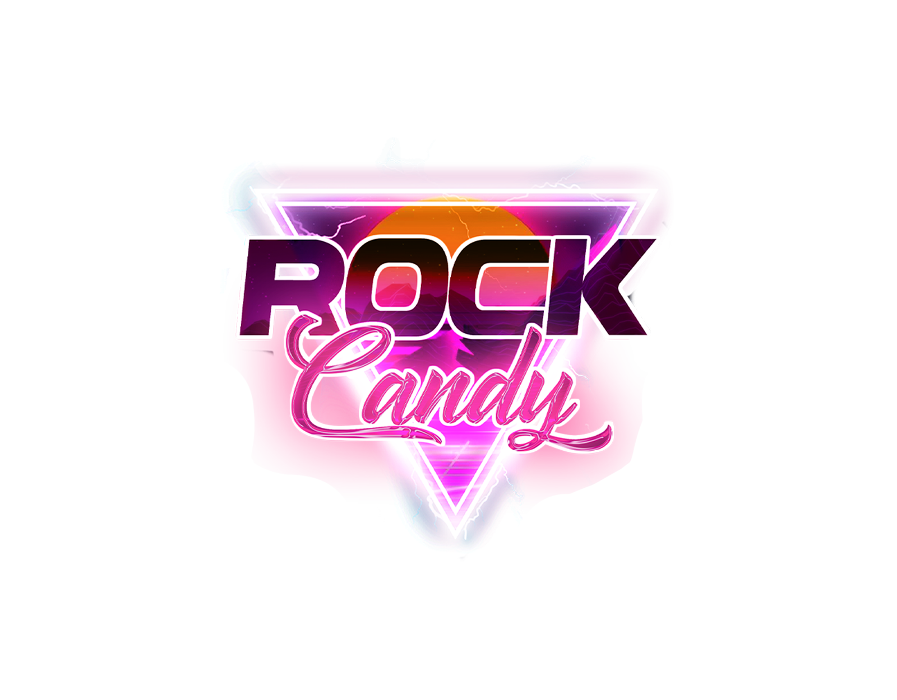
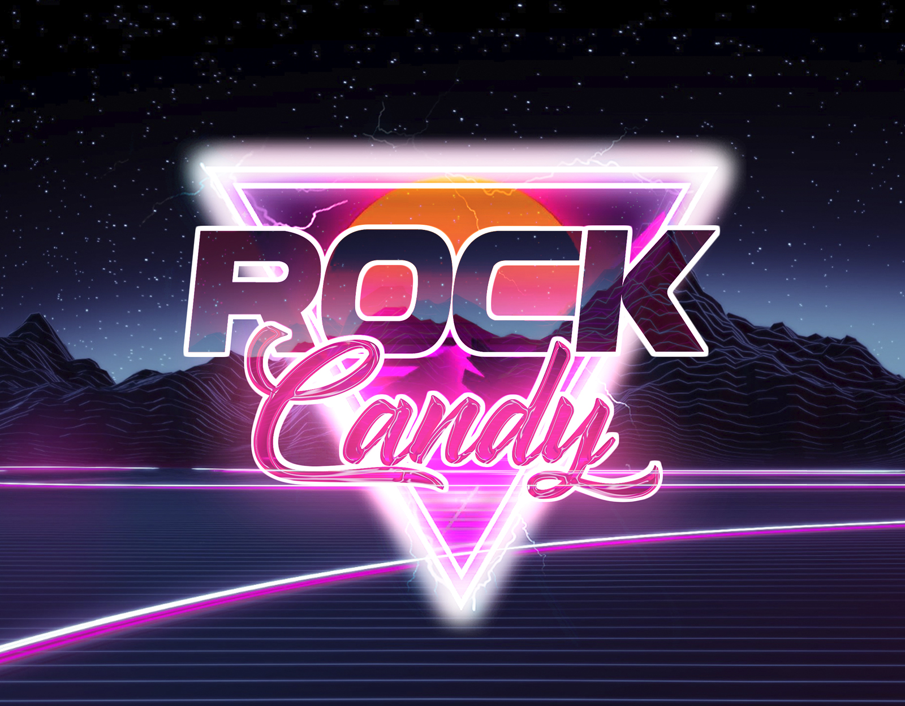

Rock Candy
Uma das minhas criações de logos favoritas combina a estética retro wave, arcade e synthwave, inspirando-se em uma fusão cativante entre Miami Vice e elementos vibrantes. A atmosfera envolvente evoca uma sensação nostálgica, transportando-nos de volta aos dias de glória dos fliperamas e da música synthwave.
A paleta de cores é uma explosão de vibrantes tons neon, projetada para capturar a atenção e despertar emoções. Este design foi concebido para uma confeitaria, adicionando um toque único e inesquecível ao ambiente. A combinação de elementos retro e modernos cria uma identidade visual marcante.
A vinheta, desenvolvida com um modelo criado por Firebol, responsável pela concepção, minha tarefa aqui foi usar seu modelo para usar para fins da confeitaria, trocando texto, música, logo e cores.
Serviços e Tecnologias
Adobe Photoshop, Adobe Premiere, Adobe AfterEfect.
- 
- 